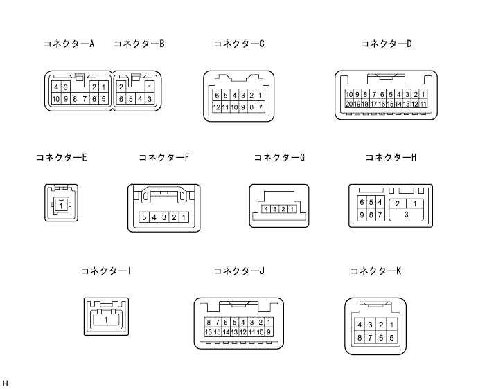
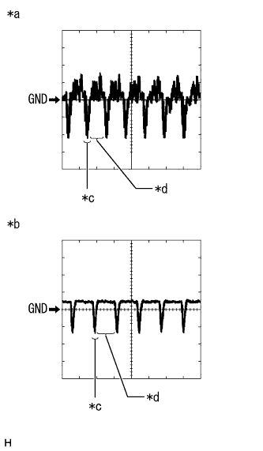
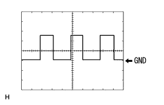

O: When open circuit
S: When shorted to body
(*1)
 Reference
Reference(*1)
ReferenceBack Guide Monitor System Terminals of ECU |

| Terminal No. (Terminal Symbol) | Input/Output | Item | Measurement Condition | Specified Condition | Trouble symptom if out of standard O: When open circuit S: When shorted to body |
|---|---|---|---|---|---|
| A3(ACC) ←→ A7(E) | Input | Voltage | ACC ON | 11 to 14 V | O: System does not operate S: Fuse blown |
| A4(B) ←→ A7(E) | Input | Voltage | IG OFF | 11 to 14 V | O: System does not operate S: Fuse blown |
| A7 (E) ←→ Body ground | - | Resistance | Always | Below 1 Ω | O: Slight increase in noise |
| Terminal No. (Terminal Symbol) | Input/Output | Item | Measurement Condition | Specified Condition | Trouble symptom if out of standard O: When open circuit S: When shorted to body |
|---|---|---|---|---|---|
| D1(V+) ←→ A7(E) | Input | Waveform | IG ON, shift lever in R | Waveform 1 | Back guide monitor screen not displayed |
| D2(CA+) ←→ A7(E) | Output | Voltage | IG ON, shift lever in R | 5.7 to 6.5 V | Back guide monitor screen not displayed |
| D11(V-) ←→ A7(E) | Input | Resistance | Always | Below 1 Ω | Back guide monitor screen not displayed |
| D12 (CGND) ←→ Body ground | - | Resistance | Always | Below 1 Ω | Back guide monitor screen not displayed |
| D19(CANH) (*1) | Input/Output | - | - | - | CAN Communication System - Fail-safe ListReference |
| D20(CANL) (*1) | Input/Output | - | - | - | CAN Communication System - Fail-safe ListReference |
| Terminal No. (Terminal Symbol) | Input/Output | Item | Measurement Condition | Specified Condition | Trouble symptom if out of standard O: When open circuit S: When shorted to body |
|---|---|---|---|---|---|
| F2(IG) ←→ A7(E) | Input | Voltage | IG ON | 11 to 14 V | O: System does not operate S: Fuse blown |
| F3(SPD) ←→ A7(E) | Input | Waveform | Turn wheel by hand | Waveform 2 | Back guide monitor system operation stops |
| F5(REV) ←→ A7(E) | Input | Voltage | Shift lever in R | 11 to 14 V | O: Screen does not switch to back guide monitor screen when shift lever is in R S: Fuse blown |
 |
Waveform 1
| Item | Description |
|---|---|
| Terminal No. (Terminal Symbol) | D1(V+) ←→ A7(E) |
| Tool Setting | 200 mV/DIV、50 μS/DIV |
| Measurement Condition |
|
| *a | Waveform A |
| *b | Waveform B |
| *c | Synchronizing signal |
| *d | Image waveform |
 |
Waveform 2
| Item | Description |
|---|---|
| Terminal No. (Terminal Symbol) | F3(SPD) ←→ A7(E) |
| Tool Setting | 5 V/DIV、20 mS/DIV |
| Measurement Condition | Turn wheel by hand |
| Terminal No. (Terminal Symbol) | Input/Output | Item | Measurement Condition | Specified Condition | Trouble symptom if out of standard O: When open circuit S: When shorted to body |
|---|---|---|---|---|---|
| 1 (CV-) ←→ Body ground | Output | Resistance | Always | Below 1 Ω | Back guide monitor screen not displayed |
| 2(CV+) ←→ 1(CV-) | Output | Waveform | IG ON, shift lever in R | Waveform 3 | Back guide monitor screen not displayed |
| 3 (CGND) ←→ Body ground | - | Resistance | Always | Below 1 Ω | Back guide monitor screen not displayed |
| 4 (CB+) ←→ Body ground | Input | Voltage | IG ON, shift lever in R | 5.7 to 6.5 V | Back guide monitor screen not displayed |
Waveform 3
| Item | Description |
|---|---|
| Terminal No. (Terminal Symbol) | 2(CV+) ←→ 1(CV-) |
| Tool Setting | 200 mV/DIV、50 μS/DIV |
| Measurement Condition |
|
| *a | Waveform A |
| *b | Waveform B |
| *c | Synchronizing signal |
| *d | Image waveform |


| Terminal No. (Terminal Symbol) | Input/Output | Item | Measurement Condition | Specified Condition | Trouble symptom if out of standard O: When open circuit S: When shorted to body |
|---|---|---|---|---|---|
| A7 (BCTY) ←→ Body ground | Input | Waveform or Voltage | Back door closed → open | Pulse generation → 1 V or less | S: During camera optical axis adjustment, "Back door is open. Close the back door before use." is displayed even when the back door is closed |
| Terminal No. (Terminal Symbol) | Input/Output | Item | Measurement Condition | Specified Condition | Trouble symptom if out of standard O: When open circuit S: When shorted to body |
|---|---|---|---|---|---|
| T15(CANH) (*2) | Input/Output | - | - | - | Refer to CAN Communication System - Fail-safe List |
| T16(CANL) (*2) | Input/Output | - | - | - | Refer to CAN Communication System - Fail-safe List |